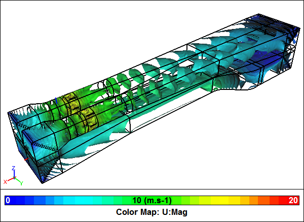

Wind Tunnel Explained With Computational Fluid Dynamics
Have you ever wondered what are the main features of a wind tunnel and what purpose do they fulfill? Well wonder no more. With the help of Computational Fluid Dynamics (CFD) let's explore a closed return wind tunnel based on the Honda Wind Tunnel at Imperial College, London.
Wind Tunnel CFD SimulationVelocity magnitude iso-surfaces
The Honda Wind Tunnel has a historic place in motorsports, having been used by many leading Formula 1 and Le Mans teams. Also it has contributed to the research activities of many trainee aerodynamicists, who later went on to join racecar teams.
The Honda Wind Tunnel is an unusual design in that the closed loop is configured vertically rather than horizontally. Also instead of a single fan it has two. For our CFD model we only need to model half the wind tunnel given that it is symmetric along its center line.
Wind Tunnel Symmetric Half ModelBlue faces indicate symmetry joints
Test Section
The main objective of a wind tunnel is to deliver a steady, consistent flow of air to the test section with minimal turbulence. All the aerodynamic apparatus in the tunnel is focused on this one objective.
Wind Tunnel Test SectionVelocity vectors colored by velocity magnitude
You can see from the CFD simulation results the test section flow has very little variation in speed, which is exactly what we are looking for. Note the simulation breaks up the flow domain into multiple-connected volumes to make it easy to replace a volume segment, e.g., switch in a new fan design, or add a model to the test section.
Contraction
The contraction immediately upstream of the test section accelerates the air and delivers it to the test section as a steady, consistent air stream with relatively low turbulence.
Wind Tunnel ContractionVelocity vectors colored by velocity magnitude
The CFD results for the contraction show how the air picks up speed as it is squeezed through the contraction.
Straightener
After turning through two 90 degrees bends in a short distance the air develops a large recirculation zone immediately downstream of the final turn. To allow the air to settle there is a length of duct that ends in a flow straightener, immediately upstream of the contraction. The straightener serves to align the air parallel to the wind tunnel walls and reduce turbulence. Typically a straightener consists of a honeycomb section parallel with the tunnel walls and a screen on its exit.
Wind Tunnel StraightenerVelocity vectors colored by velocity magnitude
Rather than model each individual honeycomb passage in the CFD model we chose to use a porous volume with a lower resistance parallel to the wind tunnel walls. The CFD results show how the air upstream of the porous volume is not well aligned with the wind tunnel walls, but once the air exits the porous volume note the better alignment.
Diffuser
The diffuser downstream of the test section slows the air in anticipation of the final two 90 degree turns to minimize pressure loses.
Wind Tunnel DiffuserVelocity vectors colored by velocity magnitude
The CFD results through the diffuser shows the air slowing down.
Turning Vanes
Given the abrupt turns in the wind tunnel, turning vanes are essential to minimize the pressure loses. The required air flow rate and the resulting pressure loss for the wind tunnel determines the fan specification. Therefore, it is usually advantageous to minimize pressure losses to reduce the capital cost of the fan and the long term running cost of the wind tunnel.
Wind Tunnel Turning VanesStreamlines colored by velocity magnitude
The CFD results show how the air through the bend with turning vanes aligns well with the corner without large recirculation zones that would increase pressure losses. The turning vanes are modeled as double-sided faces to avoid having to resolve their extremely thin cross sections.
Fan
The wind tunnel axial fan pumps air around the closed loop. Immediately downstream of the fan are flow alignment stators.
Wind Tunnel FanStreamlines colored by velocity magnitude
The fan in the CFD simulation is modeled within a moving reference frame (MRF), which is an efficient steady-state simulation technique for rotating machinery. MRF is equivalent to running a rotational simulation and then observing the results at the instant equivalent to the position of the rotor within the MRF.
Notes
- More on the Honda Wind Tunnel: "The 10x5 Honda Wind Tunnel at Imperial College" (pdf)
- NASA's wind tunnel descriptions: "Wind Tunnel Parts" and "Closed Return Wind Tunnel"
- Aerolab (wind tunnel constructors): "Subsonic Closed Circuit Wind Tunnels"
- How Stuff Works: "How Wind Tunnels Work"
- The entire (symmetrical half model) geometry was created in Caedium Professional. The CFD simulation was performed using the incompressible, steady-state RANS solver, with multiple-connected volumes, MRF, porous media, double-sided faces, and the k-omega SST turbulence model
Recent blog posts
- CFD Simulates Distant Past
- Background on the Caedium v6.0 Release
- Long-Necked Dinosaurs Succumb To CFD
- CFD Provides Insight Into Mystery Fossils
- Wind Turbine Design According to Insects
- Runners Discover Drafting
- Wind Tunnel and CFD Reveal Best Cycling Tuck
- Active Aerodynamics on the Lamborghini Huracán Performante
- Fluidic Logic
- Stonehenge Vortex Revealed as April Fools' Day Distortion Field
 Get our Blog feed
Get our Blog feed
Comments
Racecar test in the wind tunnel
What use is a wind tunnel without a model to test? Find out more at "CFD Simulation of a Racecar in a Wind Tunnel".